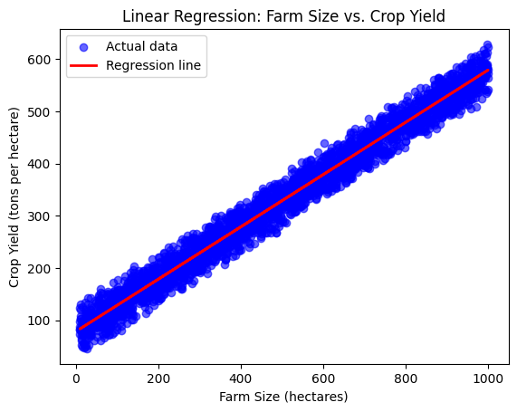

Crop Yield Prediction Using Environmental Data
Name(s): Jake Walkup
Website Link: CropYieldPrediction
Introduction
This project investigates how environmental and management factors influence crop yield (tons per hectare) using a dataset of 3,000 simulated records from Kaggle. The dataset includes rainfall (mm), soil quality index (1–10), farm size (hectares), sunlight exposure (hours), and fertilizer usage (kg per hectare).
The main research question is:
What are the most important factors that influence crop yield?
This topic was chosen because of its relevance to sustainability and agricultural efficiency. By analyzing how environmental inputs affect yield, we can better understand how to optimize productivity in an eco-friendly way.
Data Cleaning and Exploratory Data Analysis
Data Cleaning
After reviewing the dataset, no missing values or invalid entries were detected, meaning the dataset was already clean and ready for analysis. This ensured that subsequent steps were not biased by incomplete or erroneous information.
Univariate Analysis
- Rainfall (500–2000 mm): Fairly uniform distribution across the range, capturing diverse weather conditions.
- Soil Quality Index (1–10): Evenly distributed across integer categories, confirming its role as an ordinal variable.
- Farm Size (10–1000 hectares): Spread evenly across the range, representing both small and large farms.
- Sunlight Hours (4–12): Captured as discrete values, distributed evenly across the dataset.
- Fertilizer Usage (100–3000 kg): Widely distributed with some concentration in certain ranges.
- Crop Yield: Displayed a multimodal distribution, suggesting the presence of subgroups within the dataset (e.g., high-yield vs. low-yield farms).
Key Insight: The multimodal pattern in crop yield hints at complex interactions between factors rather than single-variable effects.
Bivariate Analysis
Scatterplots revealed the following relationships:
- Rainfall vs. Yield: No strong correlation; rainfall alone does not determine yield.
- Soil Quality vs. Yield: Yields appear consistent across soil quality levels, suggesting weak standalone predictive power.
- Farm Size vs. Yield: Strong positive relationship; larger farms consistently achieved higher yields.
- Sunlight vs. Yield: Minimal variation across sunlight levels, suggesting limited direct influence.
- Fertilizer vs. Yield: Slight positive trend, but widely scattered, implying fertilizer effects depend on other conditions.
Key Takeaway: Farm size shows the clearest positive relationship with yield, while other factors display weaker patterns. This points to multi-factor interactions driving yield variability.
Hypothesis Testing
Hypothesis: Does farm size significantly affect crop yield?
- Null Hypothesis (H₀): Farm size has no effect on yield. Any differences are due to chance.
- Alternative Hypothesis (H₁): Farm size has a significant positive effect on yield.
A permutation test comparing farm size and yield found a correlation of 0.982 with a p-value < 0.001. This allowed rejection of the null hypothesis, providing strong evidence that farm size is significantly associated with crop yield in the dataset.
Framing a Prediction Problem
Based on exploratory analysis, the prediction problem was defined as:
Can we predict crop yield (tons per hectare) based on farm size (hectares)?
- Response Variable: Crop Yield (continuous)
- Predictor Variable: Farm Size (hectares)
- Evaluation Metric: Root Mean Squared Error (RMSE), supplemented by R² for variance explained.
At the time of prediction, farm size is assumed to be known, making it a valid predictor.
Final Model
A simple linear regression model was trained using farm size as the sole predictor.
- RMSE: 21.46
- R² Score: 0.978
- Intercept: 78.53
- Coefficient: 0.59
This indicates that farm size alone explains nearly 98% of the variation in crop yield. The regression line closely matched the distribution of actual yields, confirming the strong predictive power of farm size.
Conclusion
This project demonstrated that farm size is the strongest predictor of crop yield in the simulated dataset, explaining nearly all yield variability on its own. While other factors such as rainfall, sunlight, soil quality, and fertilizer showed weak or scattered patterns individually, their interactions may influence outcomes in more complex real-world settings.Future work could expand the model to a multivariate regression including additional features, enabling more nuanced insights into agricultural productivity and sustainability.